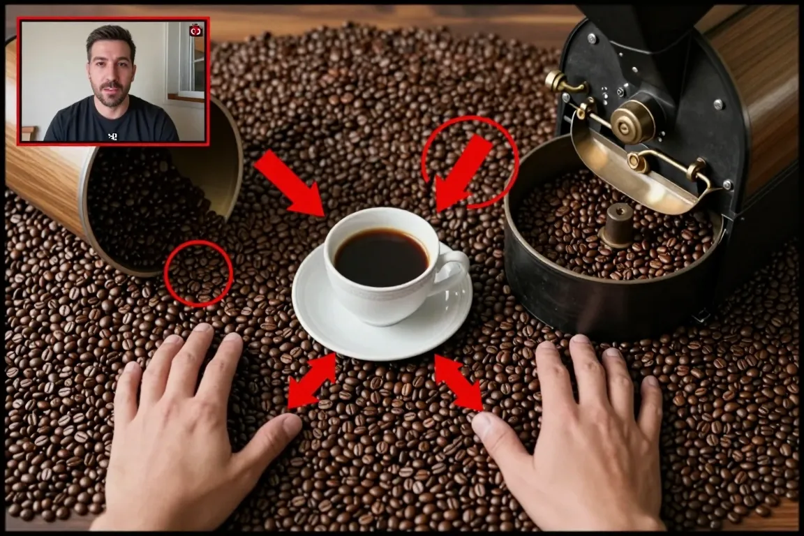

internet · 2010–now · also: Gameplay with facecam, Reaction cam, Gamer commentary
Game footage fills the frame and a small live window of the player's face sits in one corner. The face reacts, and loud captions and zoom cuts push the mood.

Core thesis
The game is the stage and the face is the audience: put the reaction next to the action, and the viewer follows the player, not the game.
Design principles
Fill the frame with game footage and set the facecam window at 18% to 25% of the frame width.
Place the facecam in a corner at 24px from each edge and keep it there for the full clip.
Crop the facecam to a rounded box with a 4px border in the accent colour.
Zoom the face by 110% to 130% for 8 to 12 frames at a scare or a win, then return.
Add a red or yellow caption of 48px to 72px with a 4px black outline for the key joke.
Cut every pause over 1.5s and add a short sound hit at each cut.
Keep the game HUD visible; do not cover the health bar or the map with the facecam.